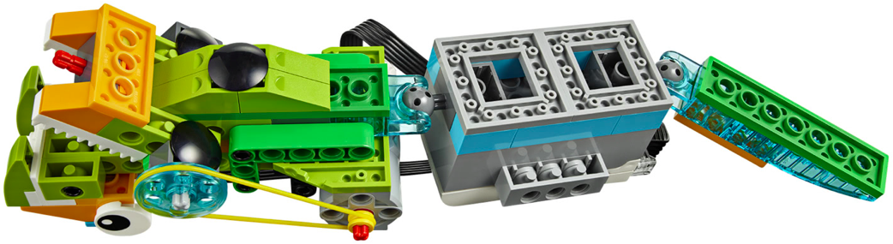

En este proyecto el alumno debe construir la base del los dos siguientes montajes. Debe hacer una serie
de retos iniciales para ver como se realiza el movimiento y como se traslada de un sitio a otro.
El primer montaje tiene las instrucciones para construir la parte de los engranajes. Este robot será la base
para los dos siguientes robots.
Los dos robots siguientes no tienen instrucciones y solo disponen de 3 fotos. Se construyen sobre la
base del montaje anterior.
El alumno debe entender como funciona un mecanismo de sujección clásico y sus distintas utilidades.
• Hacer que el robot abra y cierre el mecanismo.
• Hacer que cuando abra haga un sonido y que cuando cierre haga otro diferente.
• Hacer que abra el mecanismo un tiempo determinado y luego lo cierre otro tiempo.
• Hacer que el brazo robótico realice la siguiente secuencia:
- Abrir el mecanismo para coger una pieza, debe dar el tiempo suficiente para realizar dicha acción.
- Llevar la pieza hasta otro lado, el brazo debe mantenerse cerrado durante este tiempo.
- Abrir el mecanismo para soltar la pieza.

• Hacer que la serpiente abra y cierre la boca utilizando el sensor de proximidad.
• Repetir pero usando el sensor de sonidos
• Ahora la serpiente debe hacer sonidos cada vez que ataque.
{kind=link}
{kind=link}